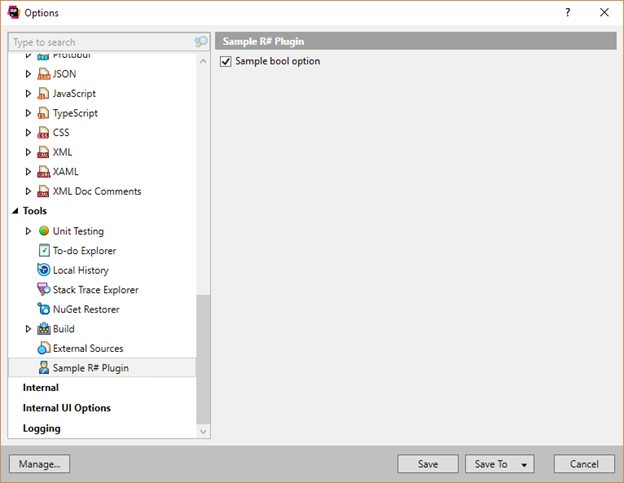

将设置添加到ReShaper选项
您应该事先知道：
例子：
ReSharper设置基于键值。设置就像洋葱一样-它们具有层次并且自上而下应用：
- 预定义设置 ：ReSharper随附的设置（可以在下一级进行修改）。
- 计算机级设置 ：设置存储在用户的文件中
Localappdata。ReSharper的所有实例都可以访问此级别。 - 解决方案级别 ：设置存储在解决方案旁边的文件中：
- .sln.dotSettings ：团队共享的设置。该文件应存储在VCS中。
- .sln.dotSettings.user ：私人用户设置。在这里，您可以存储例如最后的单元测试会话，屏幕上某些对话框的位置等等。因此，这些是特定于此特定解决方案的设置，否则，它们进入计算机级别。
- 项目级 ：设置存储在项目旁边的文件中。这些设置可以包括例如特定的命名规则。
- .csproj.dotSettings ：团队共享的设置。
- .csproj.dotSettings.user ：私人用户设置。
添加设置
要创建一个简单的设置，您应该从SimpleOptionsPage并用OptionsPage属性：
[OptionsPage(Pid, "Sample R# Plugin", typeof(FeaturesEnvironmentOptionsThemedIcons.CodeInspections), ParentId = ToolsPage.PID)] public class OptionsPage : SimpleOptionsPage { private const string Pid = "MyPluginOptions"; public OptionsPage([NotNull] Lifetime lifetime, [NotNull] OptionsSettingsSmartContext optionsSettingsSmartContext) : base(lifetime, optionsSettingsSmartContext) { IProperty<bool> checkMe = new Property<bool>(lifetime, "MyOptionsPage::SomeOption"); checkMe.SetValue( optionsSettingsSmartContext.StoreOptionsTransactionContext.GetValue( (MySettingsKey key) => key.CheckMe)); checkMe.Change.Advise(lifetime, a => { if (!a.HasNew) return; optionsSettingsSmartContext.StoreOptionsTransactionContext.SetValue( (MySettingsKey key) => key.CheckMe, a.New); }); AddBoolOption((MySettingsKey key) => key.CheckMe, "Sample bool option"); } } [SettingsKey(typeof(EnvironmentSettings), "My settings")] public class MySettingsKey { [SettingsEntry(false, "Check Me")] public bool CheckMe; }笔记

- 的
OptionsPage属性告诉ReSharper这是ReSharper设置集成点。 "Sample R# Plugin"传递给属性的是选项组的名称。AddBoolOption将“ 样本布尔选项”复选框添加到“ 选项”页面。MySettingsKey是描述将用于访问您的设置的键的类。- 的
CheckMe字段表示将用于访问设置值的设置存储条目。
读取设定值
要访问设置值，可以使用ISettingStore零件：
public class OptionsPageViewModel: AAutomation { public IProperty<string> Text { get; set; } public OptionsPageViewModel(Lifetime lifetime, ISettingsStore settingsStore) { Text = new Property<string>(lifetime, "OptionsExampleViewModel.Text"); var checkMeOption = settingsStore.BindToContextLive(lifetime, ContextRange.ApplicationWide) .GetValueProperty(lifetime, (MySettingsKey key) => key.CheckMe); checkMeOption.Change.Advise_HasNew(lifetime, v => { Text.Value = v.New ? "checked" : "not checked"; }); } }笔记
BindToContextLive设置用于读取和写入值的上下文：在我们的示例中，它是ApplicationWide。如果ContextRange.Smart是否指定了上下文，将取决于用户的设置编辑模式（请参阅本节顶部的设置层）。
上次修改时间：2017年7月12日